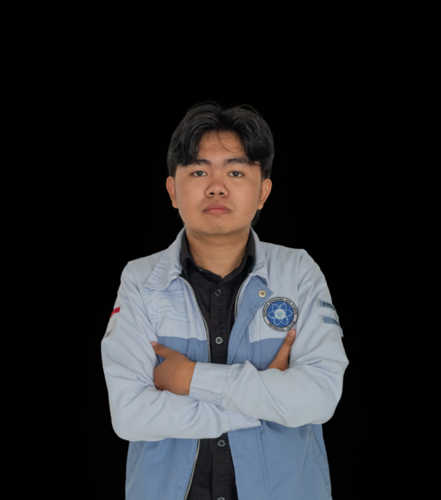

About Me
A Data Science student focused on transforming complex datasets into strategic and communicative analytical solutions.

Data Science Undergraduate Student.
Proficient in developing machine learning models, statistical analysis, and database management to support data-driven decision-making.
- Birthday: 1 November 2005
- GitHub: RayaRamadha
- Phone: (+62) 853-1255-7328
- City: Bandung, Indonesia
- Age: 20
- Degree: B.S. in Data Science
- Email: ramadharaya5@gmail.com
- Freelance: Available
Possesses a deep interest and practical experience in sports analytics, specifically in developing player scouting recommendation systems. Experienced in bridging technical information through systematic data visualization to generate actionable recommendations for team performance management.
Data & ML Projects
Orgs & Study Groups
Certifications & Awards
Tech Stacks Mastered
Skills
My Technical Proficiency
Python (Pandas, Scikit-Learn, XGBoost) 95%
SQL (MySQL, PostgreSQL) 90%
Machine Learning Development 85%
Data Visualization & Storytelling 85%
Predictive Modeling 80%
Statistical Analysis 80%
Features
I'm interested in